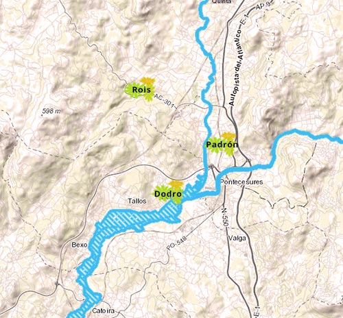
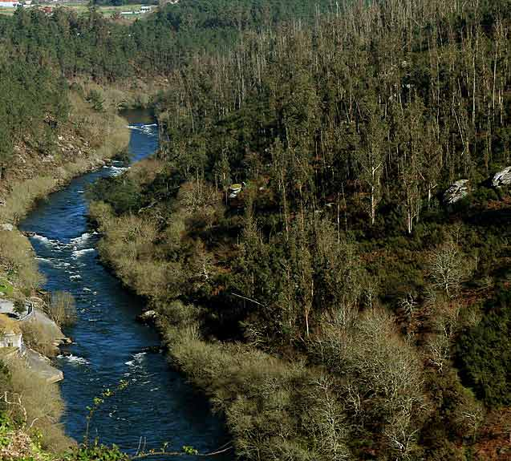

Rede Natura 2000
Sistema fluvial Ulla-Deza
Reserva Natural Fluvial
O Sistema fluvial Ulla–Deza, como Lugar de Importancia Comunitaria (LIC) da Rede Natura 2000 desde o 2004.
É un espazo natural galego declarado como Zona especial de conservación (ZEC ) e que ampara ao río e ribeiras do río Ulla, o treito final do seu afluente o Deza, as ribeiras doutros afluentes, e o seu esteiro na ría de Arousa. Este espazo percorre fundamentalmente a raia das provincias da Coruña e Pontevedra.
Este espazo está repartido entre os municipios coruñeses de (Touro, Boqueixón, Vedra, Teo, Ames, Brión, Rois, Padrón, Dodro e Rianxo, e os municipios pontevedreses de Catoira, A Estrada, Pontecesures, Silleda, Valga y Vila de Cruces. A área que protexe é de 1.633 ha.
info

Sistema fluvial Ulla-Deza
Reserva Natural Fluvial
O Sistema fluvial Ulla–Deza, como Lugar de Importancia Comunitaria (LIC) da Rede Natura 2000 desde o 2004.
O río Ulla constitúe un amplo val de marismas, brañas e veigas moi fertis. Xunto co río Sar existen pequenos ríos e numerosos regueiros que verten as súas augas no río Ulla.
info

Enlaces